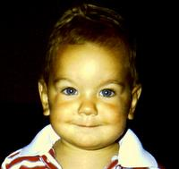

The Bride and Groom
Sam
 Born in Gander, Newfoundland, Sam spent the majority of his childhood bouncing around military bases across Canada. Sam had a love of technology from an early age, something that taught him that it was always more fun to understand how something works (and if possible, how you can make it yourself). DIY and a passion for doing things better have helped him find a career building Analytics tools for the travel industry, when he's not too busy trying to balance all his other projects. (Miranda said we couldn't put an apiary on the registry)
Mir
Raised in the wilds of Woods Bay, Miranda is most at home at the lake (and in the lake). Although she spent some time in the suburbs of Missisauga as a Teenager, had a brief stint in Spain and is currently living full time in Los Angeles, she will always call Northern Ontario home. Miranda has worked a number of jobs, but recently accepted her dream job creating and delivering training programs. Despite her skillset, she's still trying to teach Sam how to dance.
HOW WE MET
In 2013, Miranda took a job at G Adventures, looking to restart a career in travel that she had previously set aside. During her first week, she tried to strike up a conversation with Sam, who largely ignored her at the time because he was engrossed in a game of Galaga. He didn't get the high score, but by the end of the night he did have an inkling that he had met someone very, very special. That was three years ago, Three years later, it's hard to believe that they've ever been apart.
THE ENGAGEMENT
Visiting the Azores, the home of Miranda's Father, Sam is constantly checking to make sure he hasn't lost the ring. It's a small vintage piece, wrapped in emeralds and exactly in Miranda's size, and though he knows he is going to propose in Portugal, he has yet to figure out how.
It's Christmas. Miranda has an obsession with After-Eight chocolates, and though she had bought a box to bring along, she forgot to pack it. Woe! Christmas is surely ruined.
By some small miracle, while out wandering in the shops, Sam stumbles across a box of the precious mints tucked away on the bottom shelf in a corner store. He scoops it up, pays for it while Miranda is distracted, and stuffs it into his bag. He hatches a plan - removes a chocolate from it's wrapper and replaces it with the ring, then wraps the box and sets it aside for Christmas morning.
Miranda was a little disappointed when the first chocolate she pulled out appeared to have been pilfered, but was ecstatic to find the ring in it's place, and gave Sam an enthusiastic Yes.
Wedding
CEREMONY
The Trillium Resort and Spa
Port Sydney, Ontario
Saturday, March 5th, 2016
4:00 PM in the Main Lodge
*Reception to follow
Babysitters on site for post-dinner party!
SCHEDULE OF EVENTS
Rehearsal Dinner
Friday, March 4th at 6pm
Ceremony
Saturday, March 5th at 4pm (reception to follow)
Breakfast & Cartoons
Sunday, March 6th at 10am
BRIDAL PARTY
Bridesmaids
Teresa Gates
Deanna Dion
Theresa Dutson
Felicity Orr
Groomsmen
Corey Dutson
Bartek Ciszkowski
Holly Pickering
Daniel Quattrociocchi
Accommodations
HOTELS
Please note that while we wish that everyone could stay on site with us, space at the Trillium resort is limited. We will ask for your accommodation preference when you RSVP, and will follow up with booking details shortly after we receive it.
(At the venue)
Trillum Resort and Spa
848 Clearwater Lake Rd
Port Sydney, ON, P0B 1L0
1-800-263-6600
Rates:
Weekend Wedding Package - (Minimum stay Fri + Sat)
$99 per Adult per night
$36 per Child per night (ages 4-12)
Children 3 and under free
(13% HST not included)
Buffet breakfast and Dinner Included
-
Holiday Inn Express
(Shuttle Provided until 1am)
100 Howland Dr.
Huntsville, ON, P1H 2P9
(705) 788-9500
Rates - $126-$136 per room, per night (King or 2 Queen Room)
Breakfast Included
DIRECTIONS
Northbound from Toronto
Take Highway 400 North. Once you're through Barrie, the Highway will split into the 400 extension and Highway 11 - stay left to merge onto Highway 11 (ON-11). Follow Highway 11 for 100km, until you come to South Mary Lake road (you'll see a Home Hardware on the right), then turn right to head towards Port Sydney. Follow this until it hooks left along the river, then take your first right onto District Road 10, and another right almost immediately onto Deer Lake Road (District Road 46). In just under a kilometer, you'll turn left onto Clearwater Lake Road, which will take you the remaining 4km to the Trillium Resort and Spa.
Eastbound from Newfoundland
You should probably fly. Sam has experienced sitting in his car in a ditch in a snowstorm on the East Coast during a road trip, and he wouldn't recommend it.
VICINITY MAP
ABOUT Trillium Resort
Nestled among 86 acres of pristine forest and woodlands in Muskoka, Ontario, the Trillium resort provides a perfect taste of Northern Ontario winter. As a resort guest you are invited to use the Finnish wood burning sauna, outdoor hot tub and the state of the art fitness equipment. Or, you could explore the Muskoka forest at Trillium Resort & Spa with a pair of aluminium snowshoes, cross country ski, and take in the fresh air on the ice skating rink or by the outdoor fireplace.
Feel free to bring your snowmobile, as the Trillium Resort & Spa is located on a beautiful groomed trail system of more than 150 km!
Meal Options
Along with your RSVP, we ask that you make a selection for dinner for each person in your party. For kids, the resort will provide a meal of Chicken Strips. For adults, we have the following options:
7OZ SEARED CHICKEN SUPREME ~ Served with mushroom sauce and topped with herb butter, your choice of potato & seasonal vegetables.
6OZ OVEN BAKED TROUT ~ Served with choice of potato or wild and white rice, seasoned vegetables and a lemon dill aioli
We will also have a vegetarian option available - we promise it won't be a bland pasta.
Registry
As you may know, Sam and Mir have just moved across the Continent, and are planning another huge move this summer. As a result, giving gifts is somewhat impractical. Because of this, if you wish to give us something to celebrate our special day, please consider giving us a gift card or something of that nature to help us build a life for our budding little family!
Mir really likes West Elm. Sam is more practical and thinks that Amazon(dotcom) would be a great option.
LOVE NOTES FOR SAM & MIR
Email us at wedding@samandmir.com